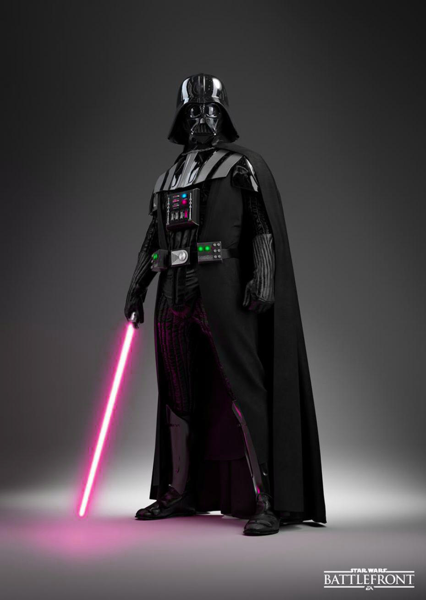

name: inverse layout: true class: center,middle, inverse --- ##### QCBS - Visual communication workshop 2016 <h1>Vectorial creation with <span style="font-family:'Kalam';color:#ffe34f;">Inkscape</span></h1> By Steve Vissault and Michaël Belluau <img src="./assets/img/Inkscape.png" width="200px"> </img> .footnote[Slides availables at [https://SteveViss.github.io/Talk_Inkscape/](https://SteveViss.github.io/Talk_Inkscape/)] ??? NOTE <!-- %%%%%%%%%%%%%%%%%%%%%%%%%%%%%%%%%%%%%%%%%%%%%%%%%%%%%%%%%%%%%%%%%%%%%%% --> --- name: inverse layout: true class: center,middle , inverse --- ## Chapter 1. # Bitmap vs vectorial <!-- %%%%%%%%%%%%%%%%%%%%%%%%%%%%%%%%%%%%%%%%%%%%%%%%%%%%%%%%%%%%%%%%%%%%%%% --> --- layout: false class: ## Bitmap vs vectorial **Two ways of represented an image:** 1. Bitmap, which can be seen as "raster" 2. Vector A bitmap is filled by pixels or dots <!-- %%%%%%%%%%%%%%%%%%%%%%%%%%%%%%%%%%%%%%%%%%%%%%%%%%%%%%%%%%%%%%%%%%%%%%% --> --- layout: false class: ## Bitmap vs vectorial <img src="./assets/img/bitVsVec.png" width="500px"> </img> ??? mes notes <!-- %%%%%%%%%%%%%%%%%%%%%%%%%%%%%%%%%%%%%%%%%%%%%%%%%%%%%%%%%%%%%%%%%%%%%%% --> --- layout: false class: ## Bitmap vs vectorial **Bitmap pictures: Photographs, digital, videos** - Number of dots (or pixels) defines through the height and width (160 x 120, 800 x 600, 1400 x 1050) - Or as dpi (dots per inches), ppi (pixels per inches) - Points are stretched or squashed when the size of the image changes - the number of points remains the same ??? On utilise DPI or PPI quand la taille de l'image est déterminé en pouce, centimètre etc. <!-- %%%%%%%%%%%%%%%%%%%%%%%%%%%%%%%%%%%%%%%%%%%%%%%%%%%%%%%%%%%%%%%%%%%%%%% --> --- layout: false class: ## Bitmap vs vectorial <img src="./assets/img/bitVsVec2.png" width="650px"> </img> ??? mes notes <!-- %%%%%%%%%%%%%%%%%%%%%%%%%%%%%%%%%%%%%%%%%%%%%%%%%%%%%%%%%%%%%%%%%%%%%%% --> --- layout: false class: ## Bitmap vs vectorial In Bitmap, each pixel has a specified color and detailed images are those with greater pixels. - Web = 72 dpi or ppi - color image >= 300 dpi or ppi - grayscale image >= 150 dpi or ppi **Some Bitmap programs:** - Photoshop (Expensive) - Paint Shop Pro (Expensive) - GIMP (FREE) - Photo-Paint (Expensive) - Graphic Converter <!-- %%%%%%%%%%%%%%%%%%%%%%%%%%%%%%%%%%%%%%%%%%%%%%%%%%%%%%%%%%%%%%%%%%%%%%% --> --- layout: false class: ## What's a vectorial image? - Lines of computer instruction (code). - Instead of using pixels to describe the image, vectorial drawing use shapes: - Circles - Lines - Curves - The colors are included in the shapes - The quality remains the same regardless of the dimensions of the drawing ??? mes notes <!-- %%%%%%%%%%%%%%%%%%%%%%%%%%%%%%%%%%%%%%%%%%%%%%%%%%%%%%%%%%%%%%%%%%%%%%% --> --- layout: false class: ## What's a vectorial image? </img> ??? mes notes <!-- %%%%%%%%%%%%%%%%%%%%%%%%%%%%%%%%%%%%%%%%%%%%%%%%%%%%%%%%%%%%%%%%%%%%%%% --> --- layout: false class: ## Few examples <img src="./assets/img/vecExamples.png" width="650px"> </img> ??? mes notes <!-- %%%%%%%%%%%%%%%%%%%%%%%%%%%%%%%%%%%%%%%%%%%%%%%%%%%%%%%%%%%%%%%%%%%%%%% --> --- layout: false class: ## Application in science </img> ??? mes notes <!-- %%%%%%%%%%%%%%%%%%%%%%%%%%%%%%%%%%%%%%%%%%%%%%%%%%%%%%%%%%%%%%%%%%%%%%% --> --- layout: false class: ## Brief summary.. **Use vectorial image means**.. - Easily editable - Easy to handle - Rotation, color change, size, etc. - Uses less space than the bitmap **But**.. - Uses a specific format, "svg" - Must be created / edited with specific software <!-- %%%%%%%%%%%%%%%%%%%%%%%%%%%%%%%%%%%%%%%%%%%%%%%%%%%%%%%%%%%%%%%%%%%%%%% --> --- layout: true class: center,middle , inverse --- ## Chapter 2. # Colorimetry ??? 1. Ils éxistent plusieurs facon de représenter les couleurs. 2. Je vais vour présenter deux d'entre-elles: RGB et CMYK 3. Cette distinction est necessaire car la manière de représenté de la couleur à l'écran est différent de la couleur imprimé sur sur poster <!-- %%%%%%%%%%%%%%%%%%%%%%%%%%%%%%%%%%%%%%%%%%%%%%%%%%%%%%%%%%%%%%%%%%%%%%% --> --- layout: false ## Printed or screen displayed? .center[ </img>] -- .pull-left[ - Additive color model (Red + Green + Blue = White) - Visible spectrum - <span style='color:red;'>For computer display</span> - Use light to display color - Color result from transmitted light - ex. rgb(38, 157, 47); from 0 to 255 ] -- .pull-right[ - Substractive color (Cyan + Magenta + Yellow + Black) - <span style='color:red;'>For printed materials</span> - Use ink to display color - Color result from reflected light - ex. cmyk(0.758, 0, 0.701, 0.384); from 0 to 1 ] <!-- %%%%%%%%%%%%%%%%%%%%%%%%%%%%%%%%%%%%%%%%%%%%%%%%%%%%%%%%%%%%%%%%%%%%%%% --> --- layout: false ## Printed image: You have to... -- - **use the right model (CMYK or RGB)** of colors - make sure your **screen is calibrated** -- ... to prevent this from happening on your poster, one day before your congress... .pull-left[ </img> ] .pull-right[ </img> ] ??? <!-- %%%%%%%%%%%%%%%%%%%%%%%%%%%%%%%%%%%%%%%%%%%%%%%%%%%%%%%%%%%%%%%%%%%%%%% --> --- layout: false ## Hex code for the web and R **Exemple in R** ```r plot(x,y, pch=19, col='#ff0000') ``` -- - **Hex** = hexadecimal number used in HTML, CSS, SVG - Each digit ranging from 0 to F (16 possibilities) - Notation: `#RRGGBB` - `RR` = two digits = `\(16^2\)` = 256 nuances of one color See [http://www.color-hex.com/color/ff0000]([http://www.color-hex.com/color/ff0000]) for RGB to HEX conversion ??? <!-- %%%%%%%%%%%%%%%%%%%%%%%%%%%%%%%%%%%%%%%%%%%%%%%%%%%%%%%%%%%%%%%%%%%%%%% --> --- name: inverse layout: true class: center,middle , inverse --- ## Chapter 3. # Exports <!-- %%%%%%%%%%%%%%%%%%%%%%%%%%%%%%%%%%%%%%%%%%%%%%%%%%%%%%%%%%%%%%%%%%%%%%% --> --- layout: false ## Bitmap and vector exports **Existing bitmap (or flatten vector) formats:** - jpg or jpeg (Joint Photographic Experts Group) - gif (Graphics Interchange Format) - png (Portable Network Graphics) - tiff (Tagged Image File Format) - pdf (Portable Document Format) -- **Existing specific vector formats**: .svg, .eps, .pdf -- For **bitmap or flatten vector**, the format determines: - Color depth (bbp) - Compression type - Transparency (PNG and GIF) - vectors or layers preserved and editable (PDF or native format .svg) - File size -- **The format choice is a trade off among quality and file size (image definitions)** <!-- %%%%%%%%%%%%%%%%%%%%%%%%%%%%%%%%%%%%%%%%%%%%%%%%%%%%%%%%%%%%%%%%%%%%%%% --> --- layout: false ## Exports <div class="panel panel-default"> <!-- Default panel contents --> <!-- Table --> <table class="table"> <tr> <td> </td> <td><b>Images</b></td> <td><b>Graphics, including <b> Logos or Line art </b></td> </tr> <tr> <td> <b>Best Quality</b> </td> <td>TIFF or PNG</td> <td>PNG or TIFF</td> </tr> <tr> <td><b>Smallest File Size</b></td> <td>JPG with a higher Quality factor can be both small decent quality.</td> <td>TIFF or GIF or PNG</td> </tr> <tr> <td><b>Worst Choice</b></td> <td>GIF is very limited color, and can be a larger file than 24-bit JPG</td> <td>JPG compression adds artifacts, smears text and lines and edges</td> </tr><tr> <td><b>Maintained transparency</b></td> <td></td> <td>PNG</td> </tr> <tr> <td><b>Editable</b></td> <td>PDF (layers)</td> <td>PDF (vectors)</td> </tr> </table> </div> [Source](http://www.scantips.com/basics09.html) <!-- %%%%%%%%%%%%%%%%%%%%%%%%%%%%%%%%%%%%%%%%%%%%%%%%%%%%%%%%%%%%%%%%%%%%%%% --> --- name: inverse layout: true class: center,middle , inverse --- ## Chapter 4. # Inkscape 101 <!-- %%%%%%%%%%%%%%%%%%%%%%%%%%%%%%%%%%%%%%%%%%%%%%%%%%%%%%%%%%%%%%%%%%%%%%% --> --- layout: false class: center, ## Interface **Four sections:** Menus and functions, drawing tools, magnetism, color choice and status bar <img src="./assets/img/Interface.png" width="775px", style="margin:0px;padding:0px;"> </img> ??? <!-- %%%%%%%%%%%%%%%%%%%%%%%%%%%%%%%%%%%%%%%%%%%%%%%%%%%%%%%%%%%%%%%%%%%%%%% --> --- layout: false class: ## Menus and functions </img> ??? <!-- %%%%%%%%%%%%%%%%%%%%%%%%%%%%%%%%%%%%%%%%%%%%%%%%%%%%%%%%%%%%%%%%%%%%%%% --> --- layout: false class: ## Drawing tools </img> ??? <!-- %%%%%%%%%%%%%%%%%%%%%%%%%%%%%%%%%%%%%%%%%%%%%%%%%%%%%%%%%%%%%%%%%%%%%%% --> --- layout: false class: ## Magnetism **Used to make objects and path "sticky"** - Objects and paths are attracted to each other (corners, environment, etc.) - Can be enabled or disabled <img src="./assets/img/Mag.png" width="500px", style="margin:0px;padding:0px;"> </img> ??? <!-- %%%%%%%%%%%%%%%%%%%%%%%%%%%%%%%%%%%%%%%%%%%%%%%%%%%%%%%%%%%%%%%%%%%%%%% --> --- layout: false class: ## Palette and status bar </img> ??? <!-- %%%%%%%%%%%%%%%%%%%%%%%%%%%%%%%%%%%%%%%%%%%%%%%%%%%%%%%%%%%%%%%%%%%%%%% --> --- layout: false class: ## Before we start.. Differences in paths and objects... -- .pull-left[ **Objects** </img> ] -- .pull-right[ **Paths** </img> ] ??? <!-- %%%%%%%%%%%%%%%%%%%%%%%%%%%%%%%%%%%%%%%%%%%%%%%%%%%%%%%%%%%%%%%%%%%%%%% --> --- layout: false class: ## Before we start.. **Object manager:** Fill and stroke .center[ </img> ] <!-- %%%%%%%%%%%%%%%%%%%%%%%%%%%%%%%%%%%%%%%%%%%%%%%%%%%%%%%%%%%%%%%%%%%%%%% --> --- layout: false class: ## Before we start.. **Object manager:** Align and distribute .center[ </img> ]